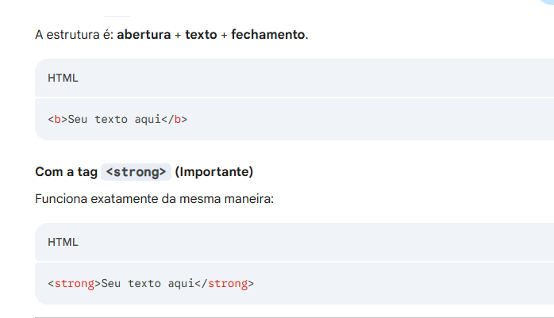

Para deixar seu texto em negrito dentro do Html,existem em duas formas principais. Embora ambas produzam o mesmo resultado visual, elas possuem significados diferente para os navegadores e leitores de tela. A tag de bold apenas altera a aparência visual do texto, sem atribuir a ele a nenhuma importância especial.
